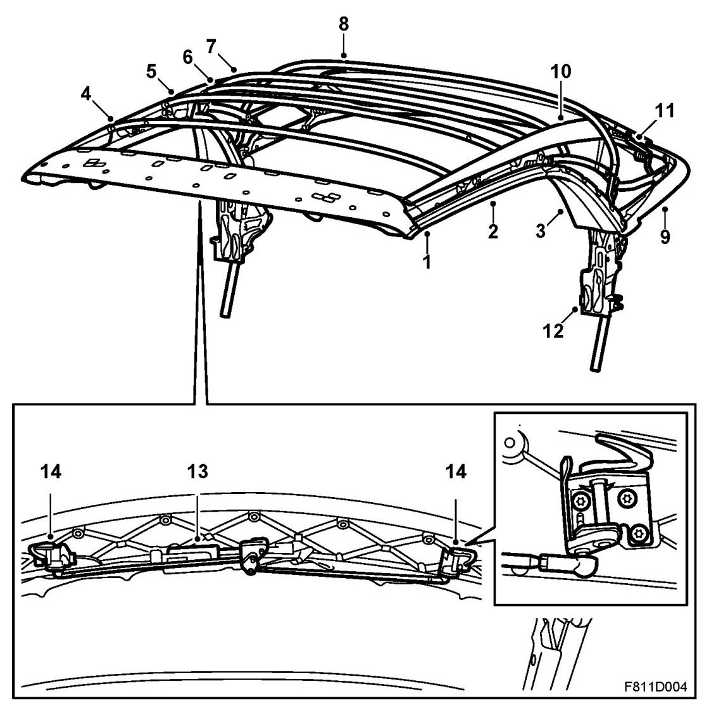
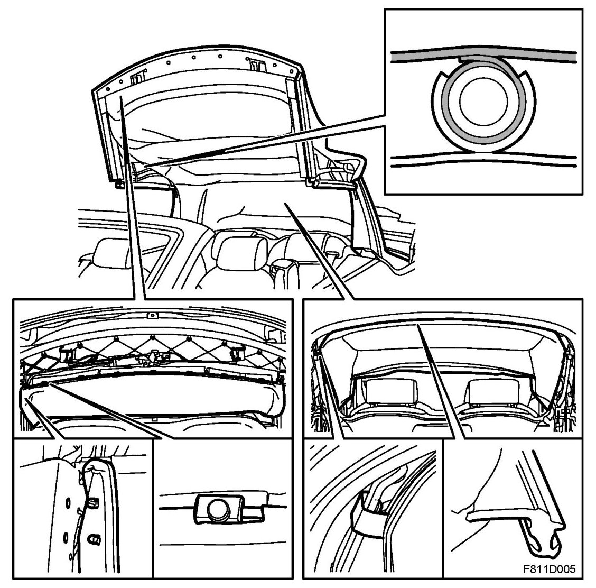
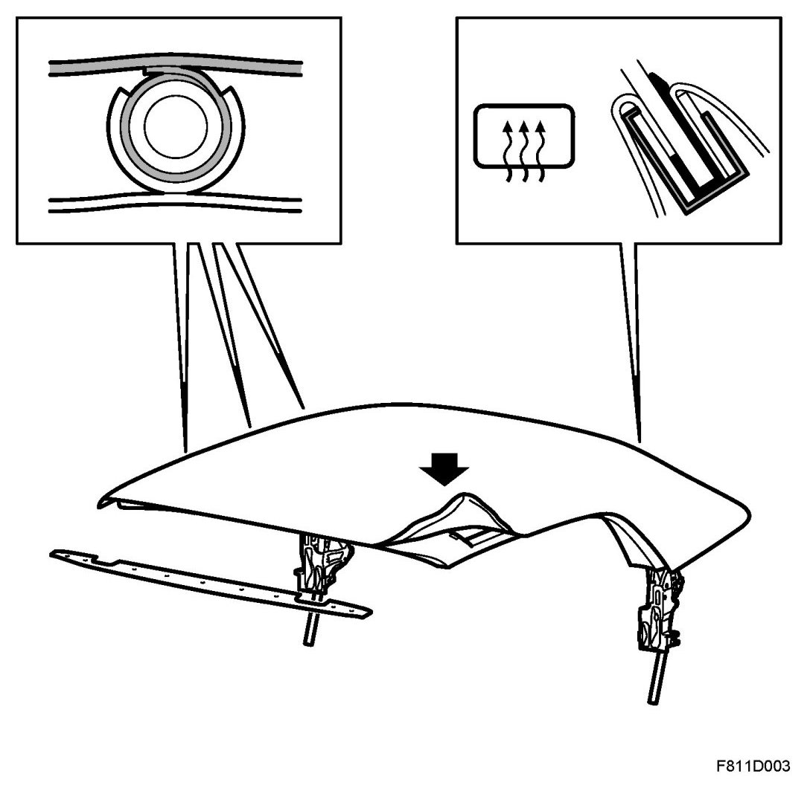
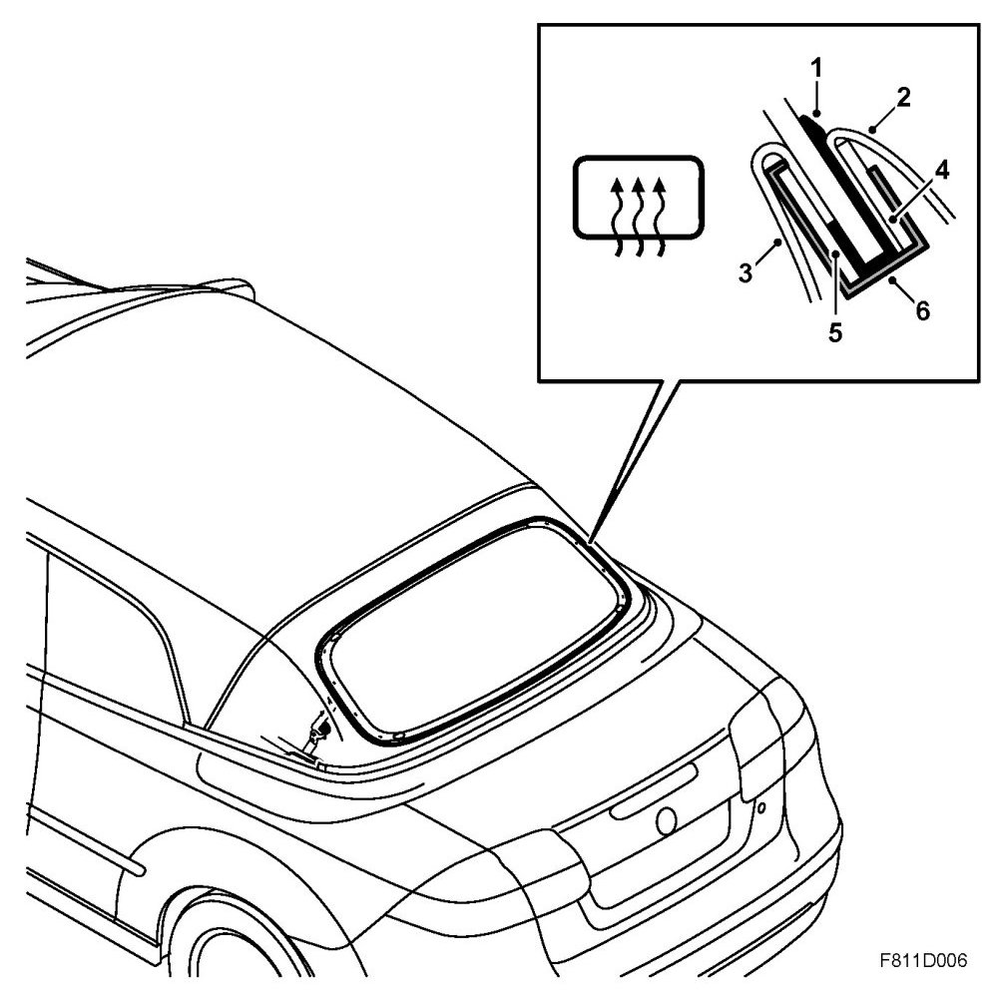
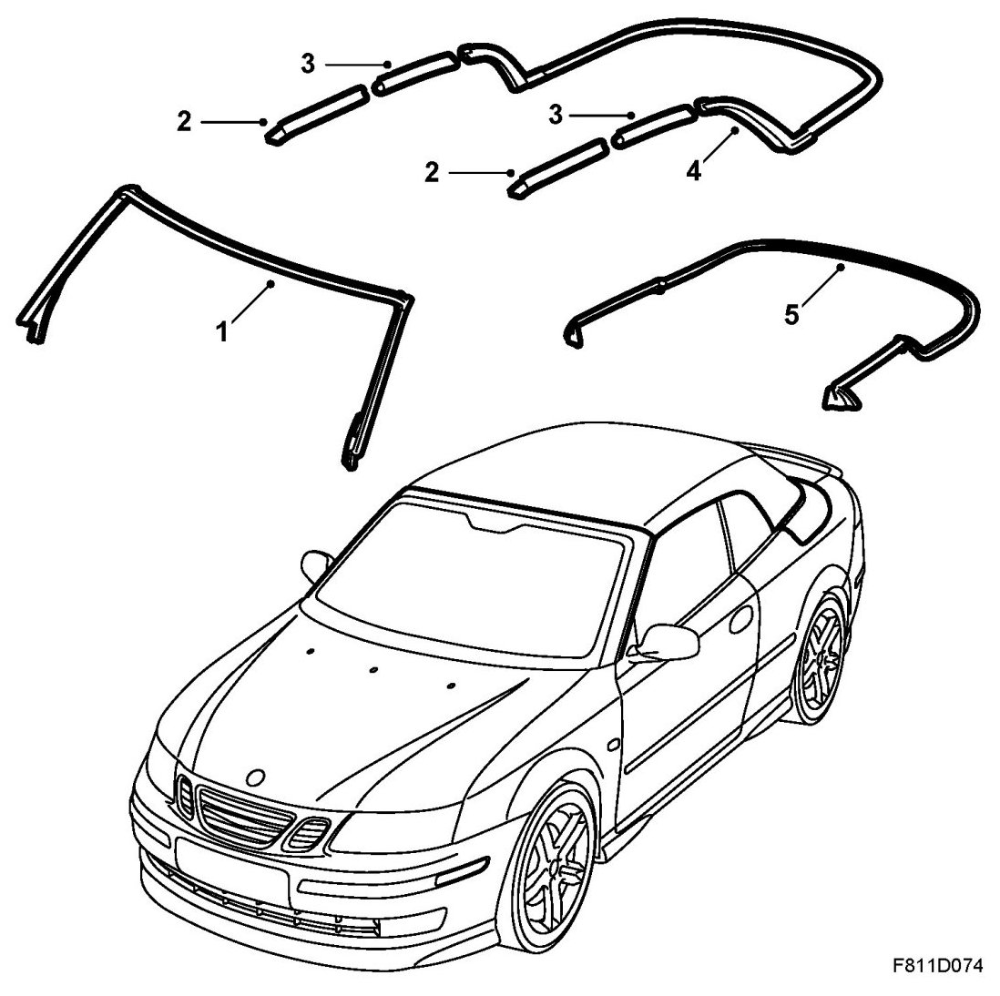
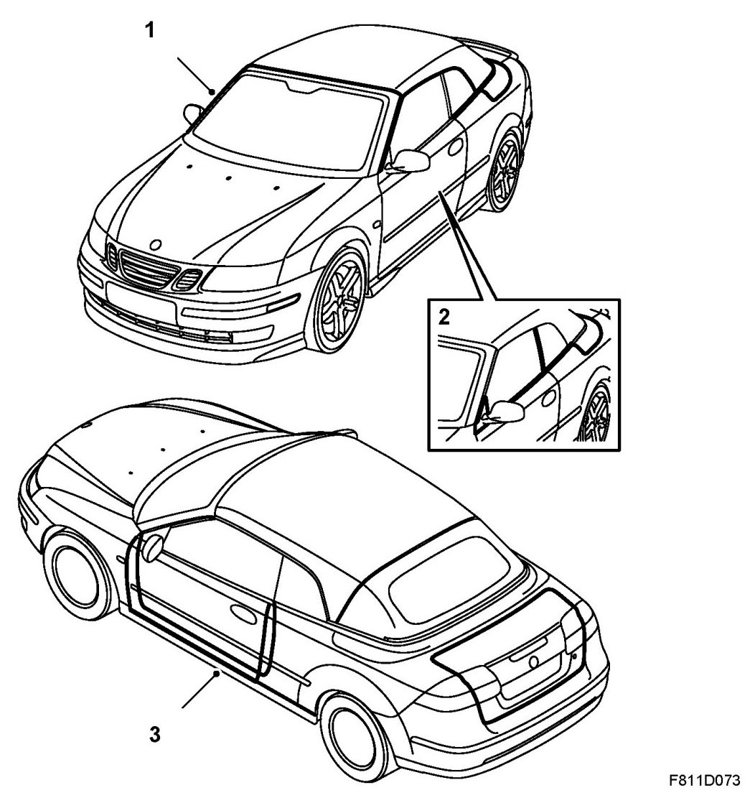
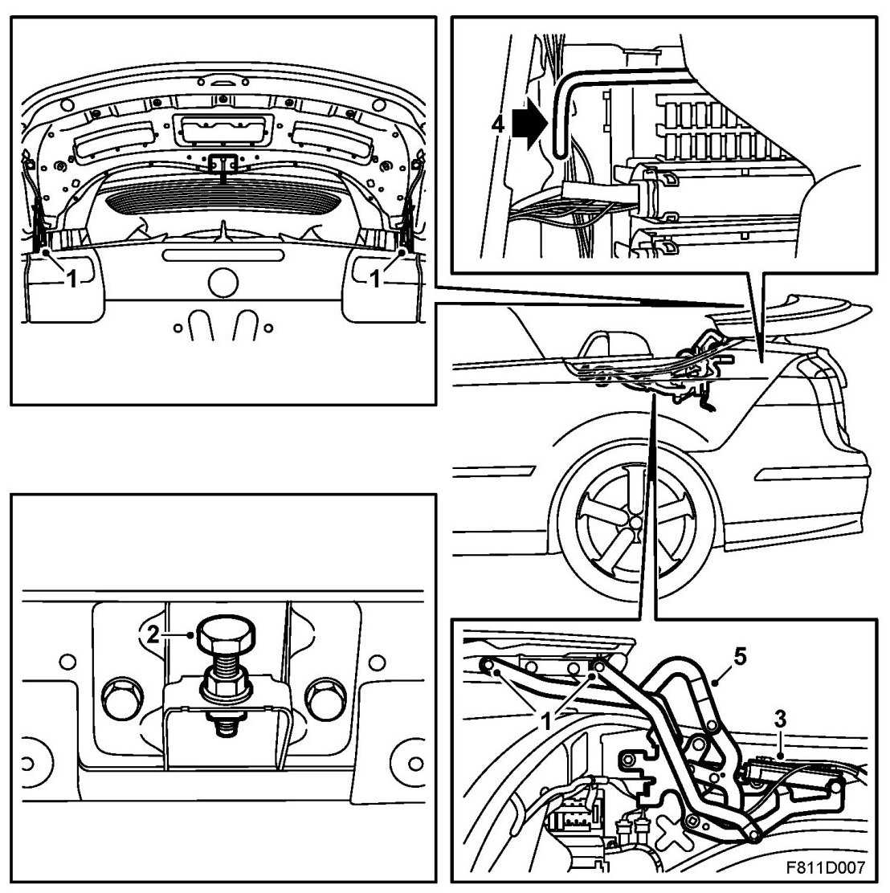
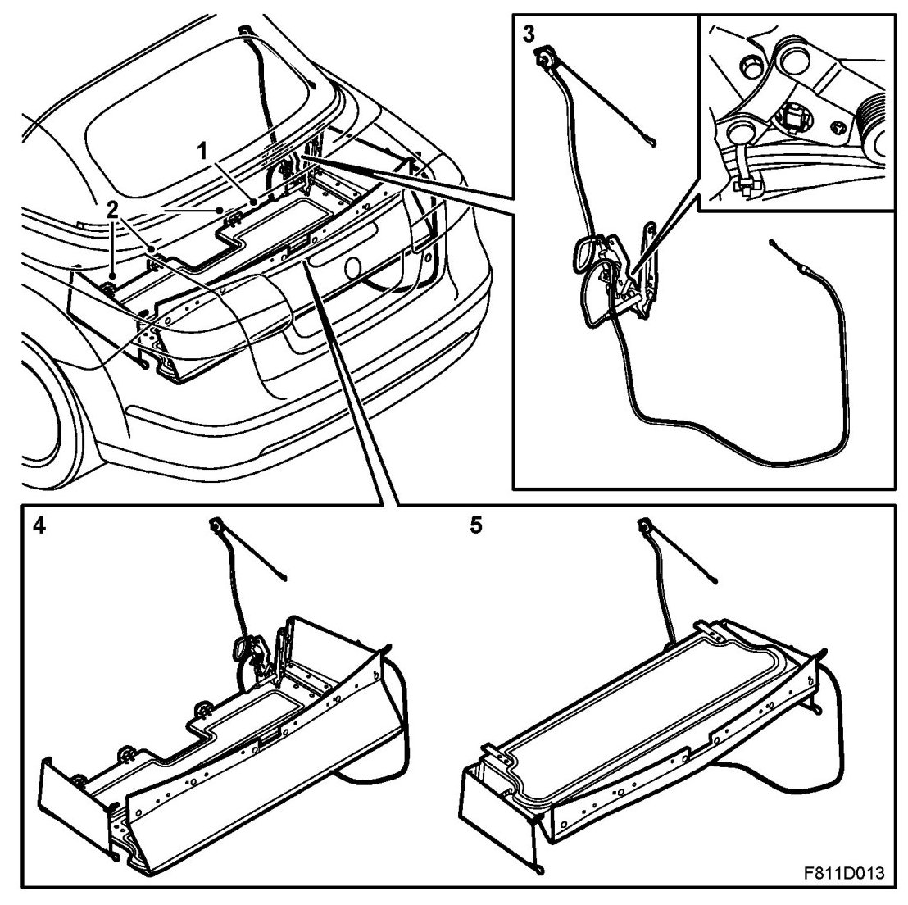
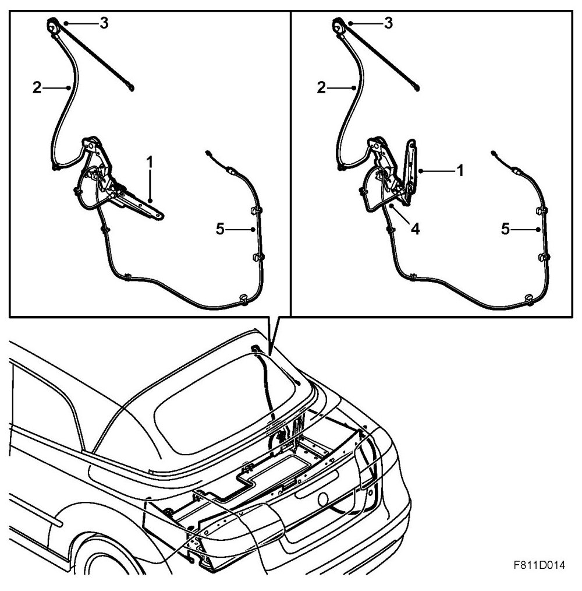

Soft Top System, Detailed Description
Soft Top System, Detailed Description
Soft top mechanism

1. First bow with integrated front rail
2. Centre rail
3. Rear rail
4. Second bow
5. Third bow
6. Reinforcing bow
7. Fourth bow
8. Fifth bow
9. Sixth bow
10. Front guide strap
11. Rear guide belt
12. Soft top mounting
13. Hydraulic cylinder for locking first bow
14. Lock hooks
The soft top mechanism comprises two parallel metal rails running along the sides of the soft top. These rails are in three parts. One front rail that is integrated with the first bow (1), a centre rail (2) and a rear rail (3). The rails are made of magnesium to give a strong roof construction. The three rails are joined to each other with hinges. As the soft top opens, the mechanism folds at these hinges and at the main point of rotation (12), i.e. where the soft top mechanism is fastened to the body.
Between the right-hand and left-hand metal rails are six bows. The bows are numbered from one to six with the front bow closest to the windscreen numbered one.
The first bow (1) is made of magnesium in one piece with the front rails. The second (4), third (5), fourth (7) and fifth (8) bows are made of steel and mounted on a linkage, one on each side, from which they are controlled mechanically. The linkage is connected to the front, centre and rear rails. The sixth bow is made of aluminium.
The reinforcing bow (6) is located between the third (5) and the fourth bow (7) and is mounted on the rear rail (3). It is not counted as a separate bow but is used only to hold the headlining taut and to reinforce the area between the two rear rails.
The two guide straps (10, 11) join together the reinforcing bow on each side (6) with the fourth (7) and fifth (8) bows and the fifth bow (8) with the rear window frame attaching linkage. The guide straps (10, 11) are screwed to the reinforcing bow (6) and blind riveted to the fourth (7) and fifth (8) bows as well as the rear window frame attaching linkage. The guide straps (10, 11) control the fourth (7) and fifth (8) bows while the soft top is being operated and also secure the soft top when it is raised.
The movement of the first (1), second (4), third (5), fourth (7) and fifth (8) bows is controlled by the main movement of the two hydraulic cylinders. The hydraulic cylinders are located one on each side.
The sixth bow (9) joint is located where the soft top mechanism (12) is mounted to the body and is operated and secured by two hydraulic cylinders, one on each side. The sixth bow is made of aluminium.
When closed, the soft top is locked to the windscreen member with rotating locking hooks (14) on both sides. These hooks are controlled by a hydraulic cylinder (13) on the first bow (1). The fastening mechanism can also be operated using a socket wrench (part of the emergency opening tool kit). Refer to emergency operation for more detailed information.
Headlining

At the front of the headlining is a steel wire that is hooked onto nine hooks on the first bow of the soft top mechanism. The headlining is also fastened to the first bow on the right and left-hand sides with plastic clips. The headlining is fastened to the second, third and fourth bows with plastic rails that snap into the bows and are secured on both sides with plastic clips. The rear end of the headlining is fastened to the rear window frame and the bottom of the sixth bow. The sewn-on attaching profile has been pressed down into a groove in the bottom of the sixth bow. The sides of the headlining are also mounted to the rear rail with sewn-on attaching profiles pressed into a groove.
Outer roof

The outer roof comprises two layers of fabric with a sealing layer in between. The sealing layer is used as a moisture barrier. Sewn along the sides is a drip moulding to prevent water droplets falling onto the seats when the doors are opened.
The roof is folded over the edge of the first bow and is fastened with double-sided adhesive tape and riveted plastic rail. On the second, third and fourth bow, the roof is fastened with patches of fabric mounted with double-sided adhesive tape. This is kept in place by the plastic headlining rails, which are snap-fastened to the bows. The reinforcing bow is mounted between the third and fourth bows. It is not counted as one of the six main bows and is used only to support the outer roof and reinforce the two rear side frames.
Around the sixth bow, the fabric is folded over the edge with a sewn-on attaching profile, which is inserted into a groove and fastened with a sealing profile. The outer roof snaps into the rear rail with plastic fasteners sewn into the fabric. Along both sides of the outer roof run wires that maintain the shape and fit of the roof even at high speeds.
Between the outer roof and the headlining is a layer of insulating fleece material.
The electrically heated rear window is fitted with clips to a frame integrated in the outer roof.
Rear window

The electrically heated rear window (1) is mounted with clips (6) to two frames (4 and 5). The outer frame (4) is glued to the outer roof (2) and headlining (3). The upper corners of the inner frame (5) are joined to the soft top mechanism with guide straps. On the ends of the inner frame are linkages joined to the soft top mechanism. The guide straps and linkages control the rear window while the soft top is being opened and closed and ensure the final open and closed positions of the rear window (1).
The soft top control module (STC, Soft Top Controller) blocks the "electrically heated rear window" function when the soft top is down. STC sends bus messages that are used by the BCM (Body Control Module).
Soft top seals

The windscreen member seal (1) seals between the soft top first bow and the windscreen member and between the A-pillars and the door windows. The seal is pressed onto the windscreen member and the A-pillars with fastening strips and screwed to the upper corners.
The front rail seal (2) seals between the soft top and the door windows. The seal is pressed onto a lip on the first rail and is screwed on at the front.
The middle rail seal (3) seals between the soft top and the rear side windows as well as the trailing edge of the door window. The seal is pressed onto a lip on the middle rail.
The rear rail and sixth bow seal (4) is one single unit. It seals between the soft top and the rear side windows as well as between the soft top sixth bow and the soft top cover. The seal is hooked and pressed into a slit at the top of the rear rails. On the sixth bow, the seal is pressed into a groove.
The soft top seal (5) and the outer weatherstrips for the rear side windows are one unit. It seals between the soft top cover and the body as well as between the side wall and the outside of the rear side windows. The seal is pressed onto a fold in the metal and is fastened with four rubber plugs at the front.
Seals

1. Soft top seals
2. Side window seals
3. Seals for doors and boot lid, CV
Soft top cover

1. Hinge lock guide points
2. Rear height adjustment
3. Hydraulic cylinder
4. Closes for emergency opening of soft top cover
5. Soft top cover hinges
The soft top cover protects the open soft top and acts as a sealing surface against the sixth bow when the soft top is closed. The soft top cover comprises three parts, an aluminium cover and a plastic cover with a moulding between. The soft top cover opens to the rear over the boot lid.
The soft top cover is mounted on two hinges (5) and is operated by two hydraulic cylinders (3) located on the left and right hand sides. In order to ensure that the soft top cover is fully open while operating the soft top, there is a position sensor located on the right-hand hydraulic cylinder.
The soft top cover is locked with the hinge (5) mechanism locking the soft top hinge at four points (1), providing a good seal against the body. To ensure that the soft top cover is fully closed, there is a position sensor located on each of the two hinges (5). At the front of the soft top cover is a lock guide that makes sure the soft top cover is in the correct position. Under the trailing edge of the soft top cover is a height adjuster (2).
Using the soft top cover emergency opener (4) will move the rods on the left and right-hand sides of the hinges (5) and lift the hinges (5) over their dead centres.
Soft top storage

1. Soft top storage
2. Soft top storage hinge
3. Soft top storage drive and position sensor
4. Soft top storage (soft top open)
5. Soft top storage (soft top closed)
The soft top storage (1) is a space between the luggage compartment and the rear seat. I comprises folding boards mounted with three hinges (2) to the torsion box and a wire driven mechanism, which lifts or lowers the soft top storage. It expands the space automatically to provide more luggage space when the soft top is closed. The space for the soft top storage is expanded when the soft top is opened.
When the soft top is open (lowered), the soft top is kept in the space between the rear seat (torsion box) and the luggage compartment, where it is protected in the soft top storage (1).
When the soft top is closed (raised), the soft top storage (1) is raised by its drive device (3) to make the luggage compartment bigger. The position of the soft top storage is indicated by a position sensor mounted in the mechanism (3).
The soft top drive device (3) has a position sensor (hall sensor) mounted on the soft top drive hinge that informs the control module if the soft top storage (1) is down or not.
If the soft top storage (1) is not at its lowest position, the control module will not operate the soft top but will send a bus message, after which the Saab information display (SID) will show: "Soft top blocked. Remove obstruction and try again", meanwhile an acoustic signal will be heard.
Soft top storage drive device

The soft top storage drive (1) is operated by a cable (2) via an idler pulley (3) from the sixth bow hydraulic cylinder. The soft stop storage drive has a catch (4) that is controlled via a cable to the soft top cover hydraulic cylinder (5) from the soft top storage hinge.
The catch for the soft top storage drive (4) makes sure the soft top storage is also raised when the soft top is closed (raised) and that it remains lowered when the soft top is opened (lowered). If the soft top cover is not closed, the drive cannot lift the soft top storage.